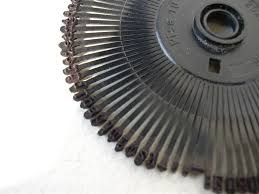
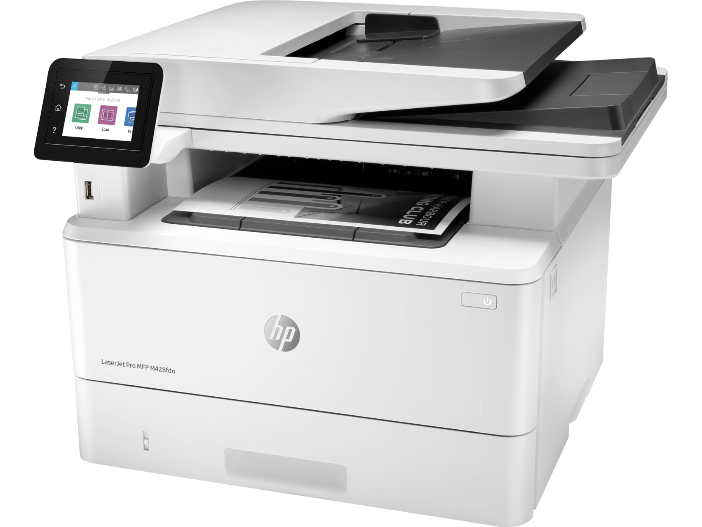
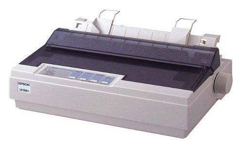
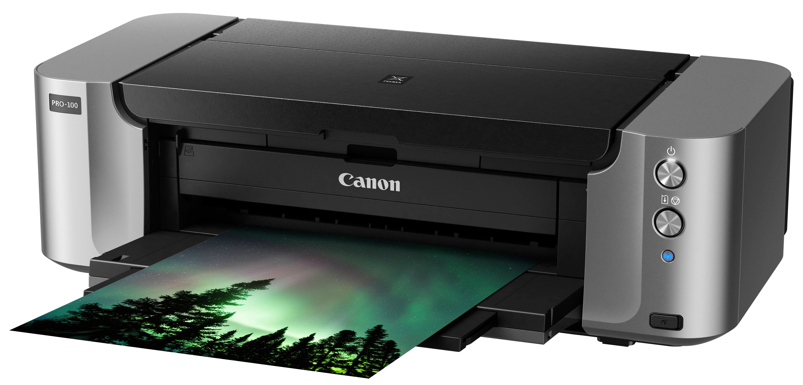

Nyomtatók
|
A nyomtató, vagy angolul printer, olyan hardver, kimeneti periféria, mely arra használható, hogy a digitális adatokat megjelenítse látható formában, általában papíron. A nyomtatott kép minősége annál jobb, minél sűrűbben vannak és minél kisebbek a rajzolatot felépítő pontok. Ezt jellemzi a DPI, (Dot Per Inch, azaz hogy egy hüvelyk hosszú vonal hány pontból áll). A nyomtatás sebességét lap/percben mérjük. Ha több számítógépet akarunk egy nyomtatóval kiszolgálni, akkor ehhez régebben switchbox-ot, nyomtatóátkapcsolót használtak, amivel fizikailag át lehetett kapcsolni a nyomtatót az egyik számítógépről a másikra. Manapság ez szükségtelen, ha számítógépes hálózatba vannak kötve a gépek. Nagyobb létszámú számítógép kiszolgálásához nyomtatószervert használnak. Komoly számítási igényű (grafikai) nyomtatók gyakran a PostScript lapleíró nyelvet használják. Nyomtatók fajtái

Margarétafejes nyomtatóCsak a gyári fejen lévő fix karakterkészletet tudja alkalmazni, ugyanúgy, mint az írógépek. Kis sebességgel, de viszonylag szép kép nyomtatható vele. LézernyomtatóA lézernyomtatóban speciális, fényérzékeny anyaggal bevont és elektromosan feltöltött henger található. Ezen egy lézersugárral jelölik meg a nem fehér pontokat: ahol a lézer a hengerhez ér, ott a henger semleges lesz vagy ellentétesen lesz töltött a henger többi részéhez képest. 
Íróhengeres nyomtatóEgyszerre egy egész sort tudnak nyomtatni, ezeket nevezzük sornyomtatóknak. Mátrixnyomtatóa mátrixnyomtató az írógép továbbfejlesztett változata. A nyomtatófejben apró tűk vannak (általában 9 vagy 24 db). A papír előtt egy kifeszített festékszalag mozog, amelyre a tűk ráütnek, és létrehoznak a papíron egy pontot. 
HőnyomtatóA hőnyomtató speciális papírtekercset, ún. hőpapírt használ. Ennek az a tulajdonsága, hogy a fehér bevonata hő hatására megfeketedik. Ennek a papírnak nyomódik neki az írófej. Tintasugaras nyomtatóA tintasugaras nyomtatók tintapatronok segítségével tintacseppeket juttatnak a papírlapra. A patronban van egy porlasztó, ez megfelelő méretű tintacseppekre alakítja a tintát, és a papírlapra juttatja azt. |